Meevy
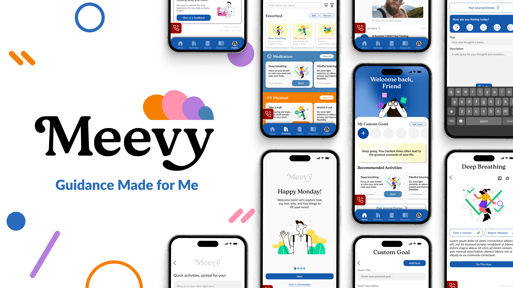
OVERVIEW
Role:
UX Researcher
UI Designer
Timeline:
~6 weeks
Software Used:
Figma, InDesign, Photoshop, Illustrator
Project Details
A specialized app designed to adapt to daily life. Fully customizable mental health app that evolves with you, whether you are having a good day or facing challenges. With everything in one place, it eliminates the need to shuffle between different tools, making self-care seamless and accessible in just a few click.
Project Goals
Meevy is designed to break away from repetitive mental health apps by offering a truly personalized experience. Every feature is tailored to the user, ensuring support that feels natural and engaging. I also focused on a sleek, intuitive design that keeps things simple and digestible, preventing overwhelm while promoting ease of use.
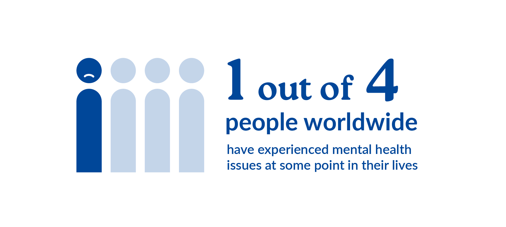
Understanding the Core Problem
1 in 4 people worldwide struggle with mental health. It is a global issue that often goes unseen, yet it affects how people live, work, and connect every day. Understanding this reality is the first step in designing with empathy and purpose.
![Table titled 'User Survey Prompts'. It includes an objective goal and a list of questions divided into two sections: User Profile and User Experience. The objective goal is to obtain and gain insights on user experience in using mental health apps. User Profile questions include: Have you ever used any mental health app?, What is your age?, What is your intention of using them?, Which type of applications have you used?, and How often do you use them? User Experience questions include: How helpful are they to your mental health?, What matters most to you when using these apps?, Is there any pain point while using the app?, and Is there a feature that you enjoyed?](images/pages/uiuxDesign/meevy/Research/meevy_SurveyPrompts.jpg)
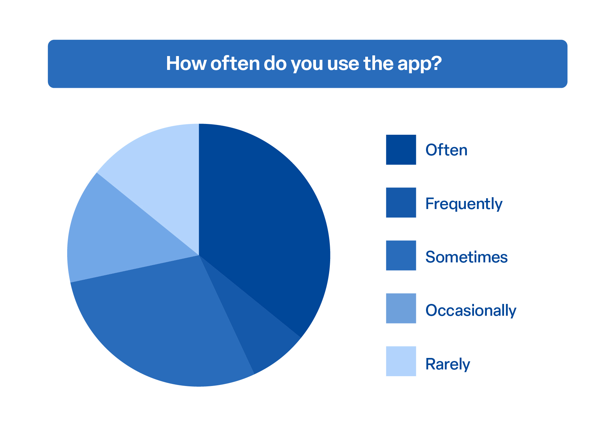
Observing User Behavior
To better understand how people interact with existing tools, I surveyed over 12 users about their mental health app usage habits. This gave insight into how often these apps are actually used in daily life, highlighting patterns of engagement, inconsistency, and potential user fatigue.
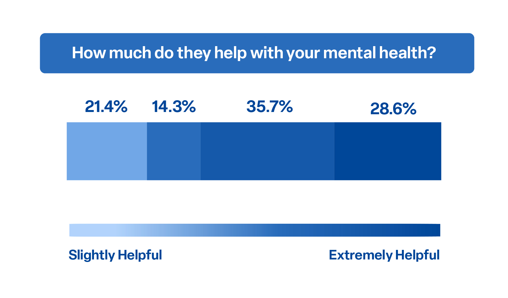
Evaluating Impact
EUsage alone doesn't tell the full story. This question aimed to explore whether people actually feel supported by the apps they use. The responses revealed mixed results, pointing to a gap between functionality and emotional impact.
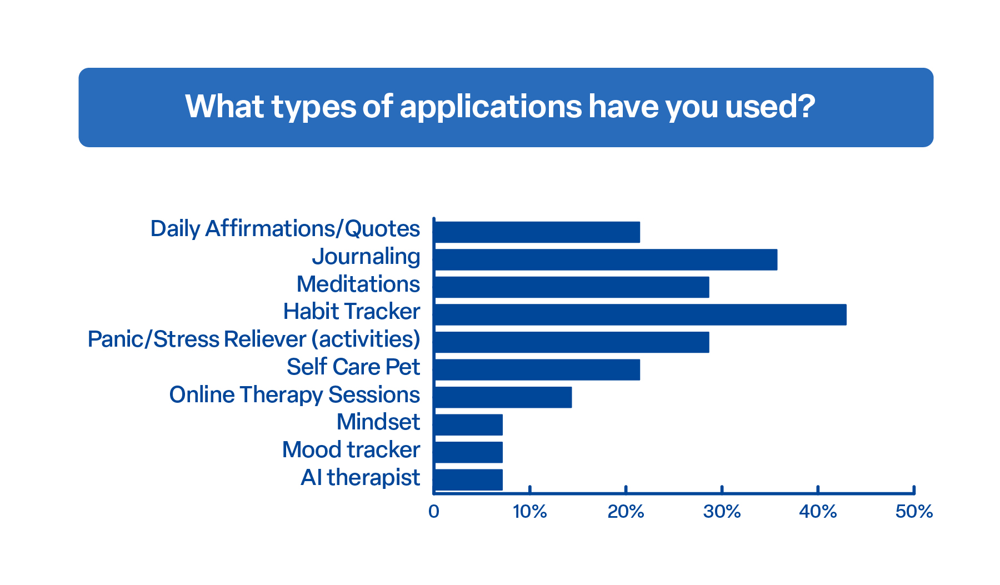
Exploring Use Cases
Mental health needs are diverse, and so are the tools people turn to. This chart helped map out the landscape, from journaling to therapy, and gave clarity on what users are drawn to based on their personal wellness goals.
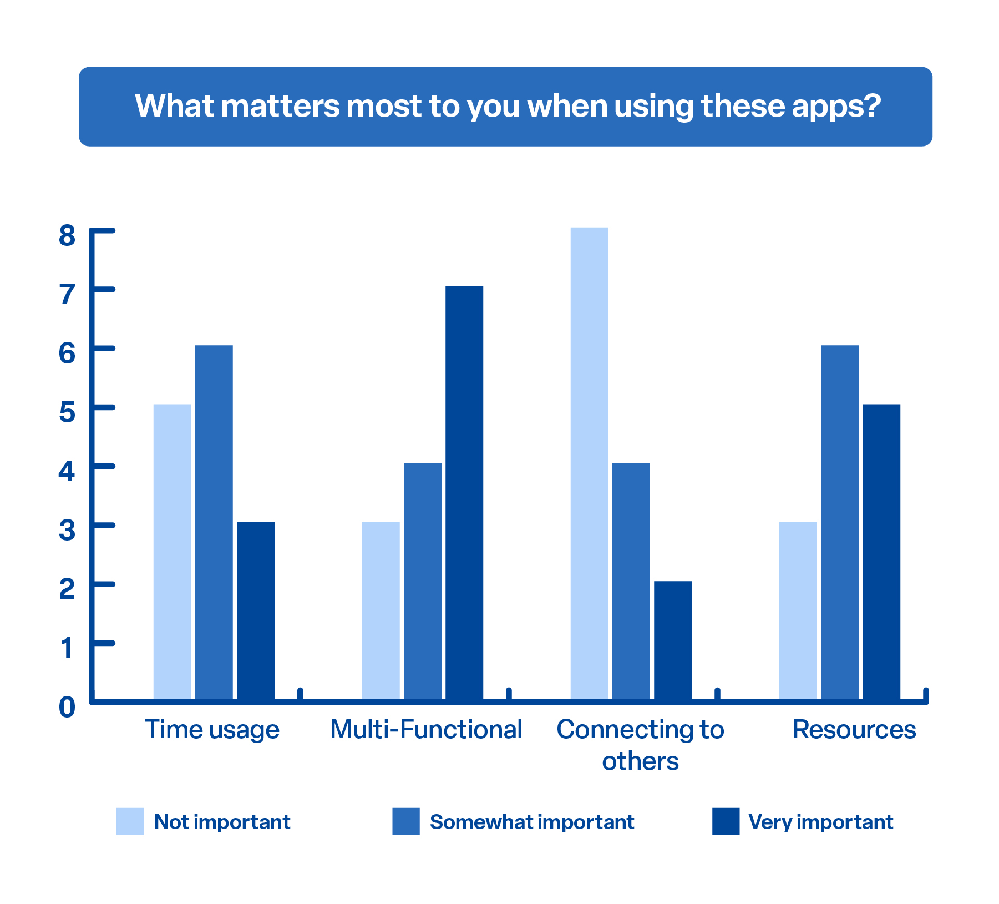
Defining User Priorities
Understanding user priorities was key to uncovering what makes an app meaningful. Whether it’s saving time, offering multiple functions, or providing real human connection, these insights helped define what users truly value in their mental health experience.
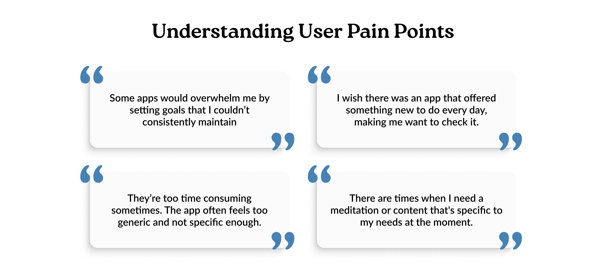
Research and Design Process
After hearing directly from users, it became clear where many mental health apps are falling short. Some people felt overwhelmed by unrealistic goals, while others said the apps were too generic or time-consuming. A few mentioned they wanted something that felt fresh each day, or more tailored to what they were going through in the moment. These insights pointed to some important gaps, and now it is time to take everything learned and start designing an experience that feels more personal, useful, and easy to stick with.
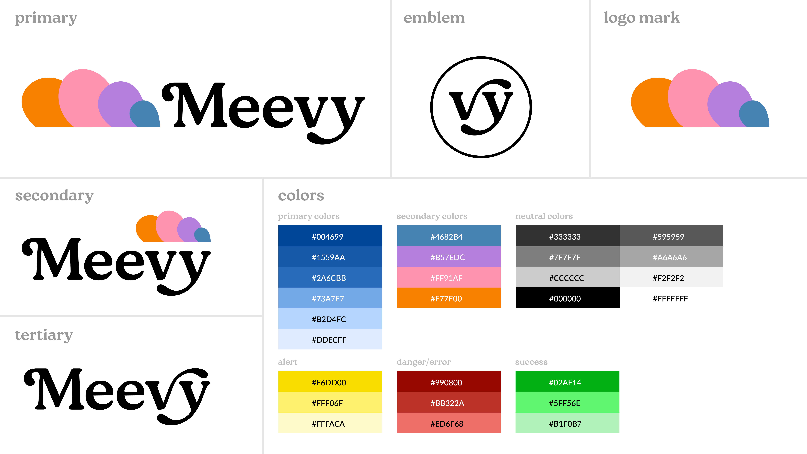
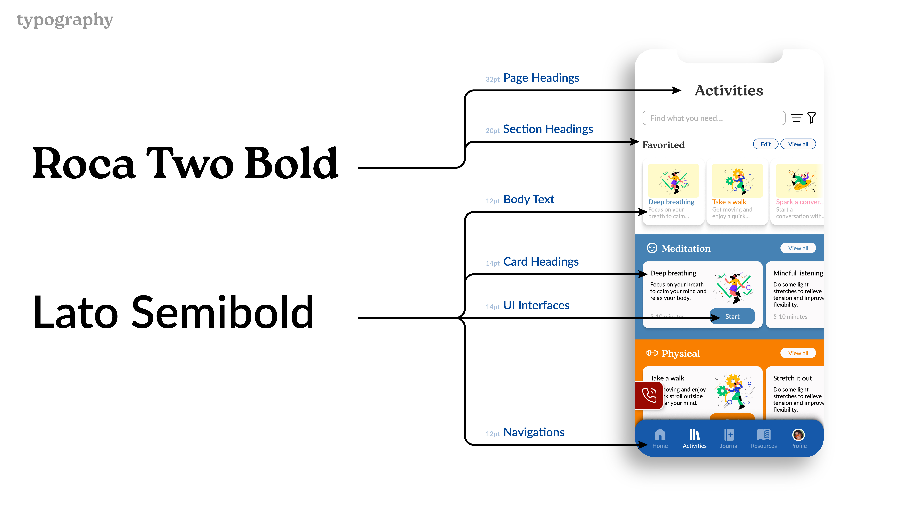
Personalized Onboarding Experience
Instead of overwhelming users with features upfront, the onboarding is designed to feel like a conversation. Starting with a simple emotional check-in helps build trust and makes users feel seen from the very beginning. By understanding what is behind how someone feels, the app can offer more thoughtful, relevant support. This kind of personalization not only encourages daily use, but also builds a stronger emotional connection, turning the app into something that feels truly supportive, not just functional.
Built Around You
This screen is designed to give users what they need, exactly when they need it, without getting in the way. The emergency button is always there, offering a sense of safety for those moments when support is urgent. Suggested activities stay available even if someone skips onboarding, keeping things flexible. And with custom goals right on the homepage, users can take charge of their own journey, setting the pace and building habits that actually fit their life.
Tracking What Matters
This space is meant to help users stay connected with their own journey. Visualizing habits and moods makes it easier to notice small changes and patterns that might otherwise go unnoticed. The consistency calendar encourages regular check-ins without pressure, and the journal timeline brings reflection into the everyday, making it feel familiar, not formal. Adding a feedback card is about keeping communication open, so the app can grow with the people who use it.
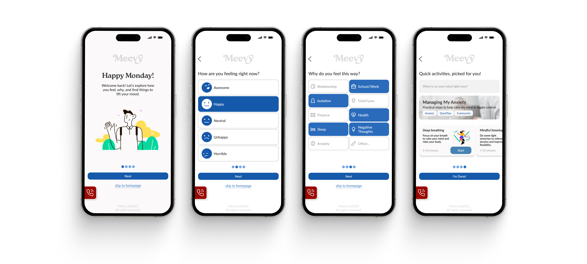
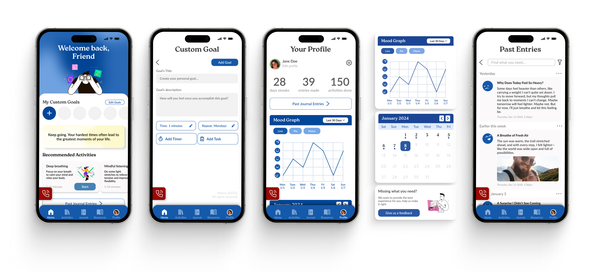
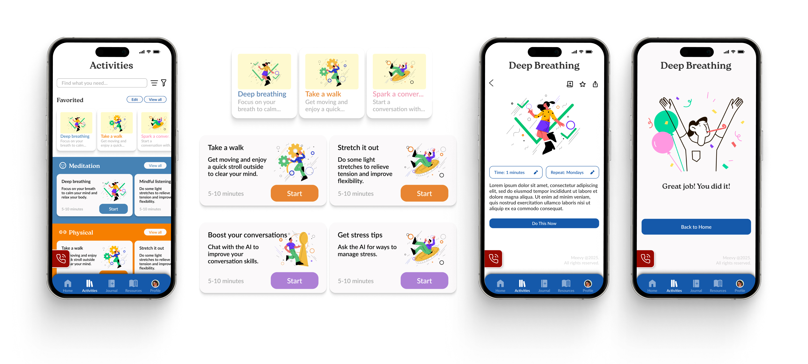
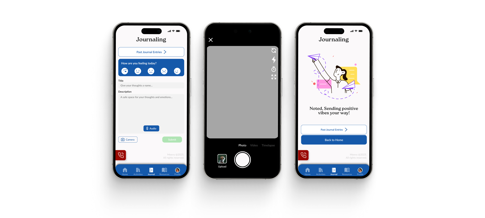
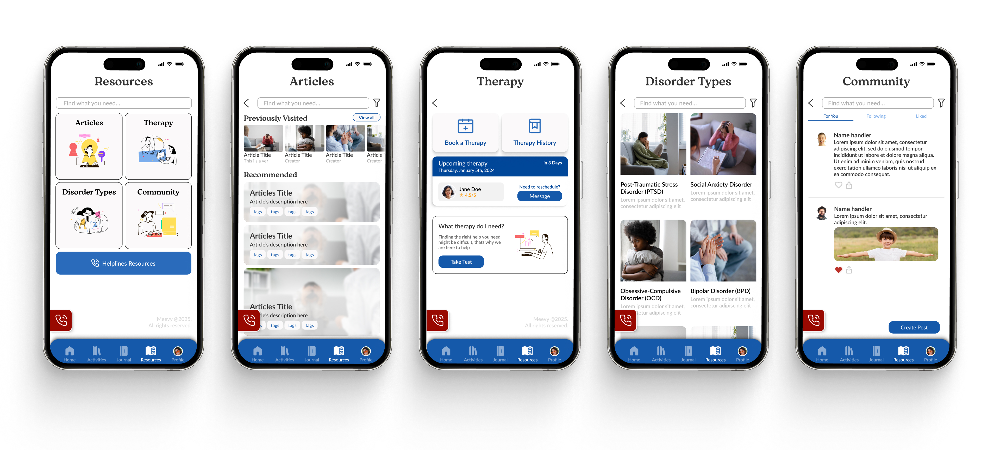
REFLECTION
What I learned
One of my biggest takeaways was learning to prioritize user pain points before jumping into solutions. With a mental health-focused product, every detail matters, from visuals and tone to how efficiently the app supports someone in the moment. I focused on grounding each design choice in research while still aiming for a modern, approachable experience that feels supportive and thoughtful.
Throughout the process, I also learned how to manage large-scale design work in Figma. This included organizing tens of pages and components, building with auto layout, and applying a consistent grid system. These practices helped me stay efficient, maintain consistency across the app, and make iterations much easier as the project grew.
What could be improved
One area I’d like to improve is gathering deeper, more continuous user insights. To better pinpoint key pain points and evaluate whether the app is meeting its goals, it would be valuable to run multiple rounds of user surveys and collect feedback after real usage. More data and perspectives would help shape clearer direction on what’s working, what’s missing, and how the product can grow meaningfully.
On the technical side, I aim to keep improving my Figma workflow, especially when it comes to organization and scalability. Practicing best practices like clean auto layout structure, proper naming, and component hierarchy helps make future updates smoother. As projects grow, staying organized becomes essential not just for yourself, but for clearer collaboration across teams.